Back to Macau this time with friends from uni. The route is essentially the same as we did back in our other Macau trip. The winter in Macau is nice. Streets are bustling but there's a chill in the air that doesn't make it unbearable. Clear skies. We hit up the main cathedral and eat some street food. It's difficult to find "authentic" Macanese food (I guess some Cantonese or Southern Chinese variety) since there are so many tourists on the main street, so we just do the tourist stuff. Hit up the Fort as well.
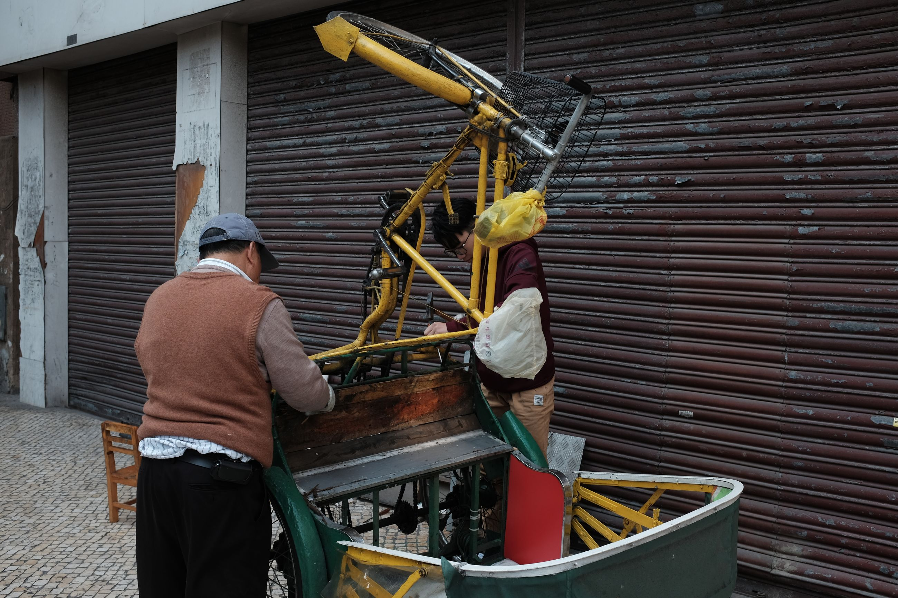 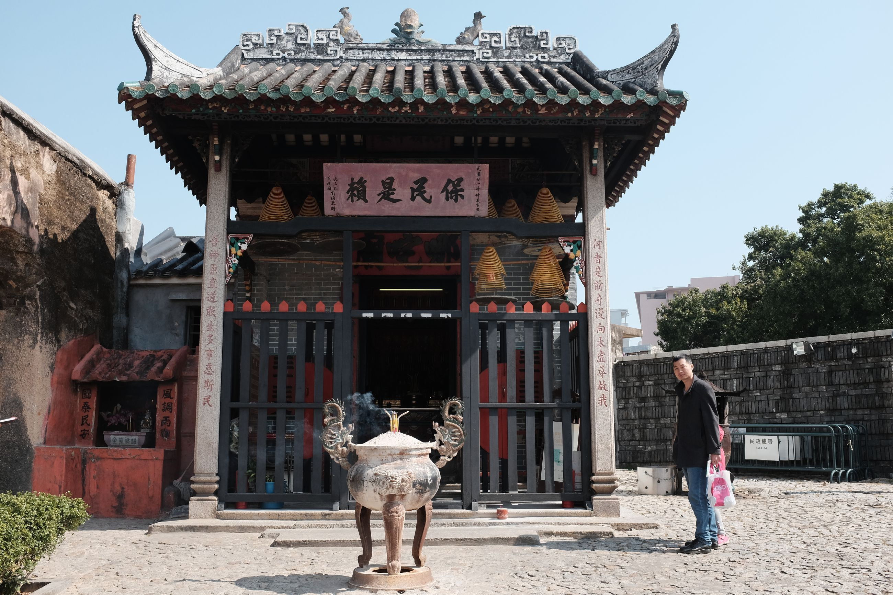 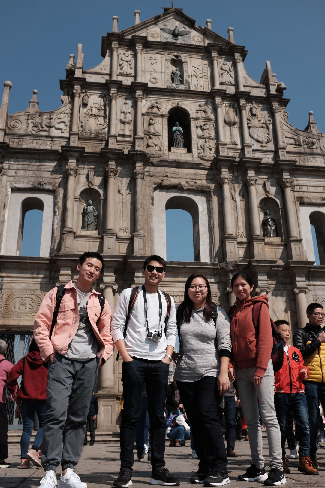 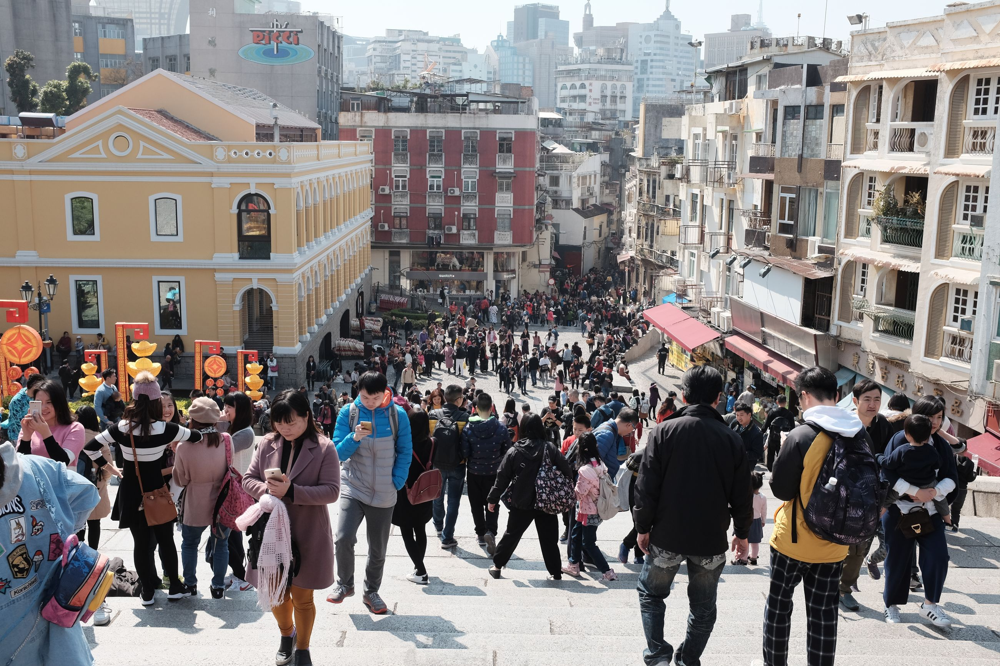 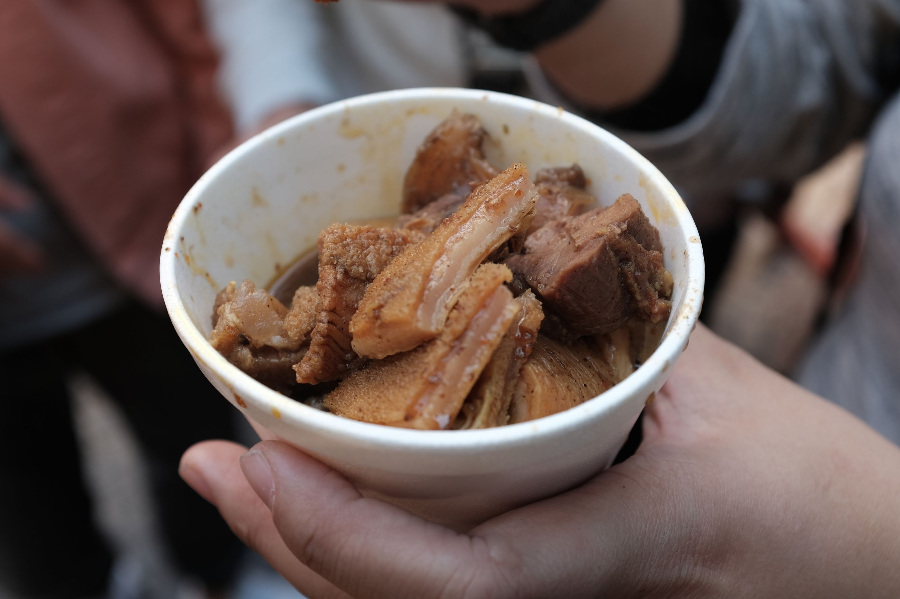 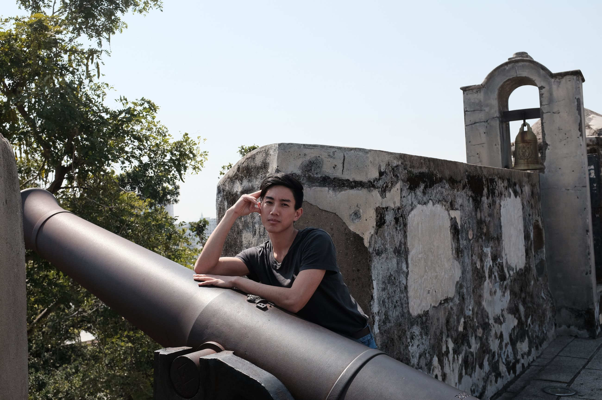 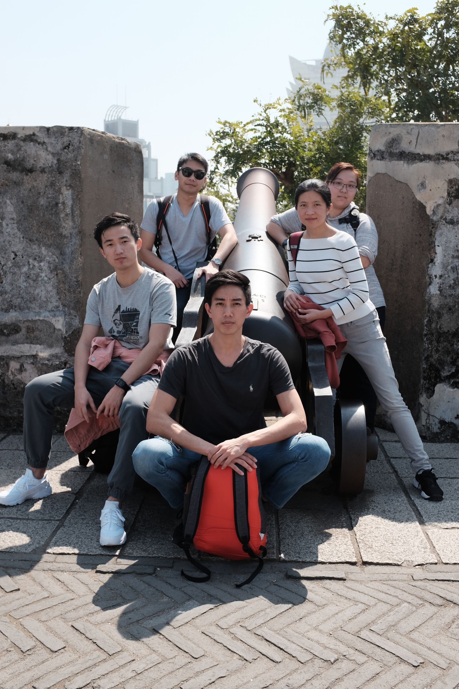
Macau is considered a Special Administrative Region (SAR) of China. Previously, it was a Portuguese colony. It's the quiet, younger brother equivalent to Hong Kong. While Hong Kong sees protests, the Lion Spirit, and bustle, Macau is subsequently quieter and sleep; maintaining the small fishing village aesthetic. The landscape is noticeably older not by age, but by lack of maintenance, as is seen through the seemingly shanty-looking public housing falling in disrepair.
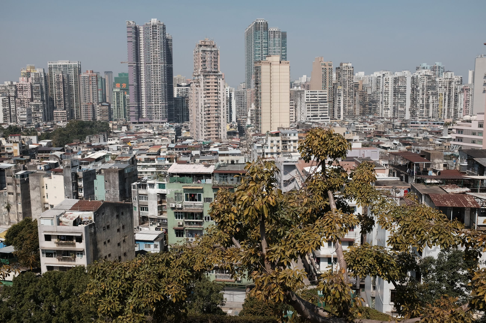 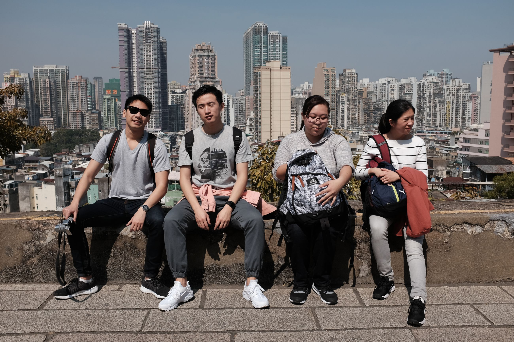 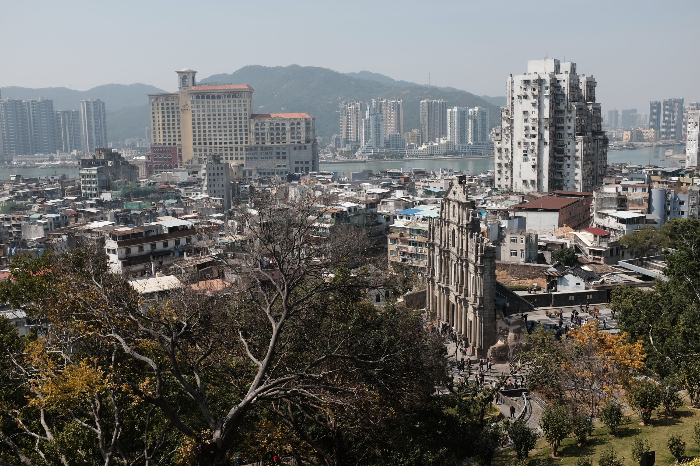
Still, one of my favorite places to go is Coloane in the south. This is truly the only place left that is Portuguese-Macanese mix. The small Portuguese buildings and the fishing village mixed together are trapped in time.
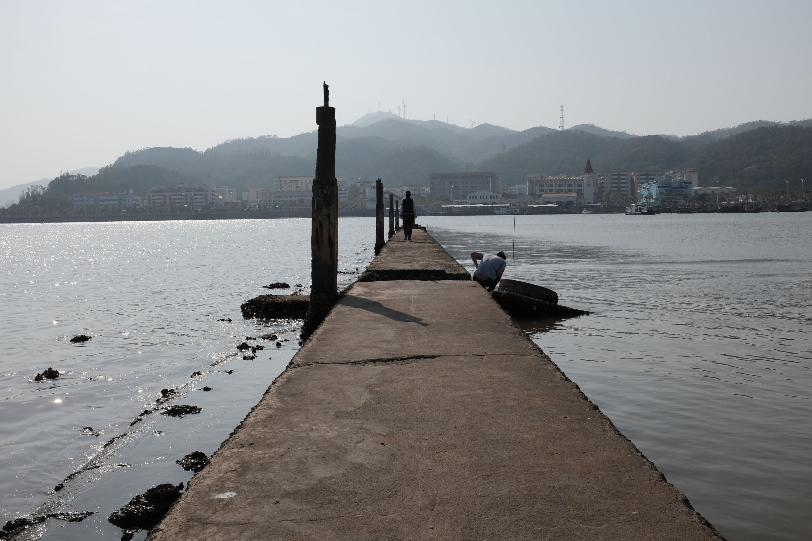
There's one of my favorite go-to eggtart shops as well, Lord Stowe's Cafe. To this day, I still think it's one of the best places I've had eggtarts. It's neither completely like a Portuguese nata (蛋撻) nor an egg tart. It's a creamy mixture of both. If there's anywhere you must go in Macau, it's here. https://drive.google.com/file/d//view?usp=sharing
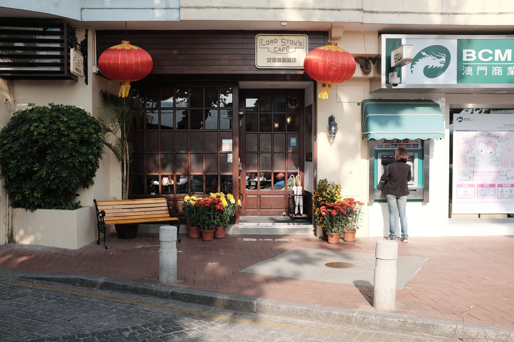 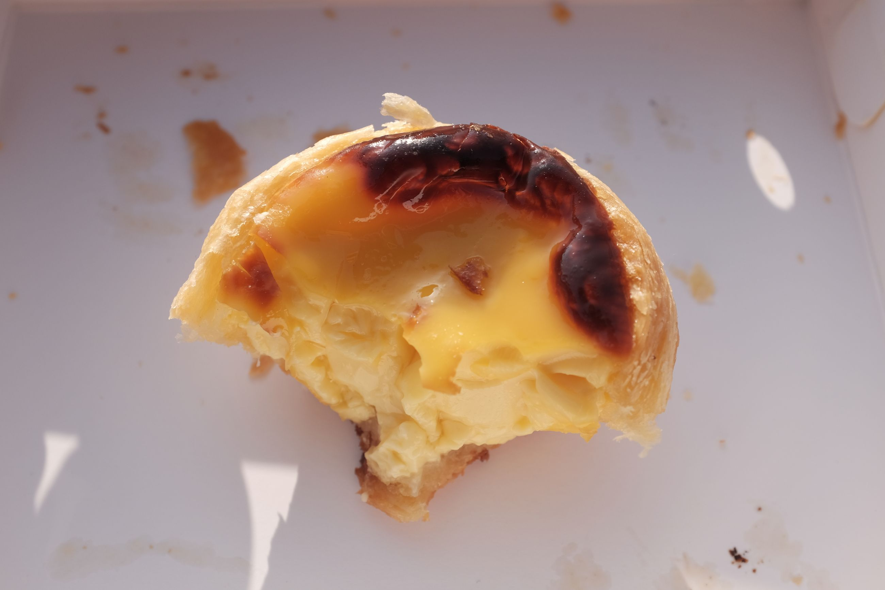 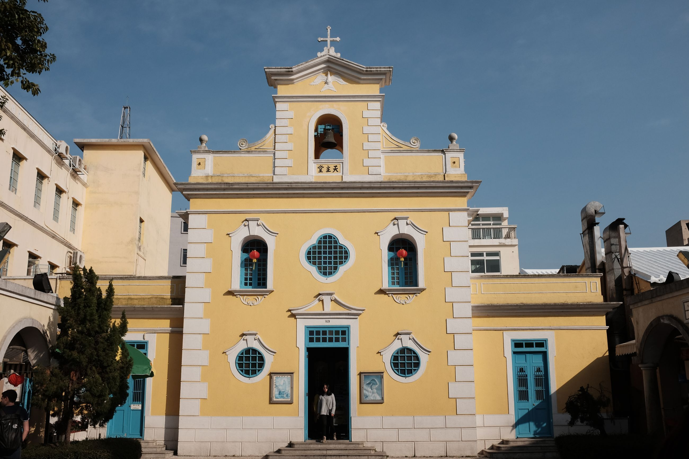
At night, we go to the Taipa area and check out a casino which is tacky and lit up. We think it's going to be more of a drunken mess (think Las Vegas), but when we go in it's surprisingly quiet and oddly sobering. I squander 100 HKD betting on a small machine whose rules I'm unfamiliar with. After that, we head back and drink in the hotel overnight. Cathedral, check. Fort tower, check. Egg tart, check. Gamble, check. The essential Macau.